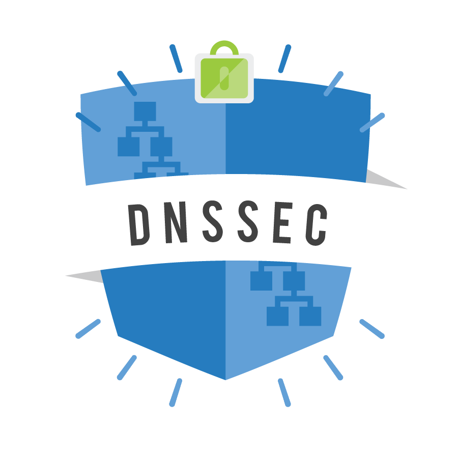
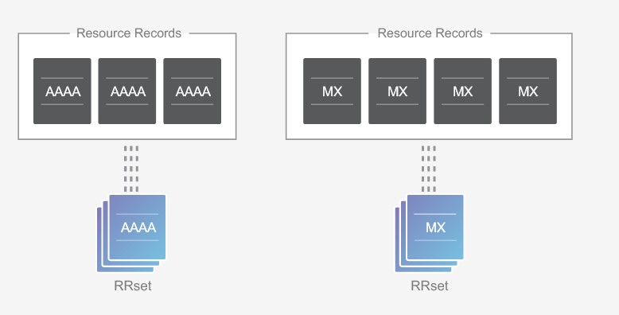
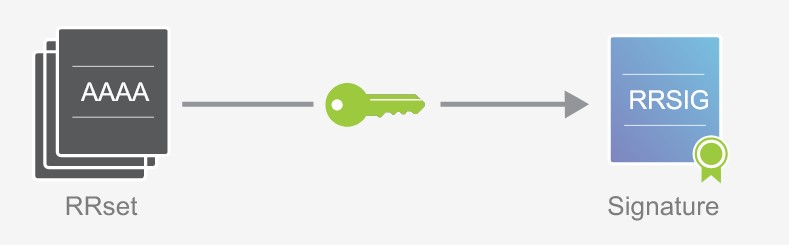

淺談 DNSSEC 使用 dig
Contents

圖片來源 CloudFlare
在開始之前必須先搞懂….
- DNS 在 Internet 中扮演什麼角色、功能是什麼
- 域名註冊商 DOMAIN name registrar 與 DNS hosting 域名伺服器託管商 的差別
DNSSEC 是什麼，為什麼需要它
大家知道 DNS 是分散式的樹狀系統，在原始設計當中並沒有考量到環境安全性的問題，也就是沒有加入身分驗證機制。
DNSSEC (Domain Name System Security Extensions) 就是用來解決這個問題的方案。透過層層簽署達到身分驗證的目的。
DNSSEC 簽署方式簡單說就是由上層域 (Parent Zones) 簽署下層域 (Child Zones) 的 RRSet，解釋一下:
以 blog.cloudflare.com 這個 DOMAIN 來說 . (root-server) 是 com. 的 上層域 (Parent Zones)，同時對於 blog 而言 cloudflare. 是它的上層域，下層域反之。
那什麼是 RRSet ? RRSet 全名 Resource Records Set，相同的 onwer (或者稱做 DOMAIN Name) + 相同的紀錄類型 (例如:NS、MX 、A、SOA 等) + 相同的 Class (例如:IN) ，即形成一個 RRSet。它是上層域 (Parent Zones) 簽署目標的最小單位，換句話說就是不會針對每條 DNS record 做簽署的動作。
搭配 CloudFlare 的示意圖會比較好理解

那麼 RRSet 被簽署過後就會產生 “RRSIG”，RRISG (Resource Record Signature) 是 DNSSEC 帶來的新紀錄類型 (record type)。 另外還有新增 DNSKEY (DNS Public Key)、DS (Delegation Signer)
詳情參考 DNSSEC Wiki

簽署過程可以參考:
【英文版】How DNSSEC Works
【繁體中文版】DNSSEC 如何運作
使用 dig 查詢 DOMAIN Name 是否有設定 DNSSEC
如果系統上還沒有安裝 dig 的話可以透過以下指令安裝
|
|
使用 dig blog.cloudflare.com +dnssec 查詢 DOMAIN 是否有設定 DNSSEC
結果如下:
|
|
可以發現 flags 的地方比起一般查詢多了 ad 代表 Authenticated Data
另外在 Answer Section 的部分多了一個前面提到的 RRSIG record
#Validate dnssec using dig-nixCraft
如果出現這樣的結果就代表 DNSSEC 設定成功。不過值得一提的是就我所知，有別於 TLS/SSL Client (e.g. Browser,OS) 會去針對證書的合法性去做驗證，似乎目前沒有 Client 端會自動去從 root-server 驗證下來。
SITCON 裡面的 Chris 大大點破盲點表示:如果 Client 端要做這件事情的話，載入網頁的時間就會更長 (可能增加 10~200ms 不等的時間)
也就是說 DNSSEC 目前只在 DNS resolver 與其他上層 DNS server 間達到驗證資料來源的目的。
那麼對於 Client 端而言有什麼辦法能夠增加 DNS 資料的可靠性，防止中間人攻擊 (MitM,Man in the Middle) 遭到竄改呢?
Ans: 使用 DNS over HTTPS (DoH)
P.S. 不過目標 DNS resolver 最好也要支援 DNSSEC
dig 命令介紹
-
查詢 DOMAIN 對應 IP
1dig <DOMAIN>dig 預設查詢 A 紀錄
-
指定 DNS server 查詢 DOMAIN 對應 IP
1dig @<DNS_Server_IP> <DOMAIN> -
指定查詢 MX 紀錄
1dig <DOMAIN> MX -
從 root-server 查詢起 (有點 tracert 的感覺)
1dig <DOMAIN> +trace -
不想看落落長的 answer
1dig <DOMAIN> +short
參考資料
【實作】DNSSEC 不讓域名解析指向假的 IP 位址，加密簽名避免 DNS 快取污染
How to test and validate DNSSEC using dig command line - nixCraft
【大推，可以複習 DNS】A Short Practical Tutorial of dig, DNS and DNSSEC
Author 老柯
LastMod 2020-12-10